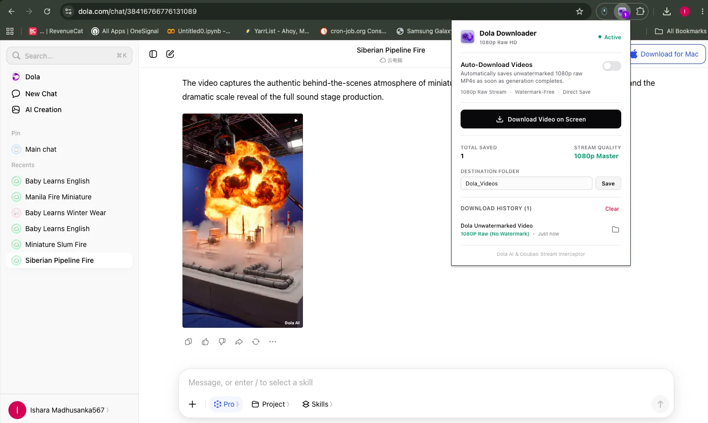
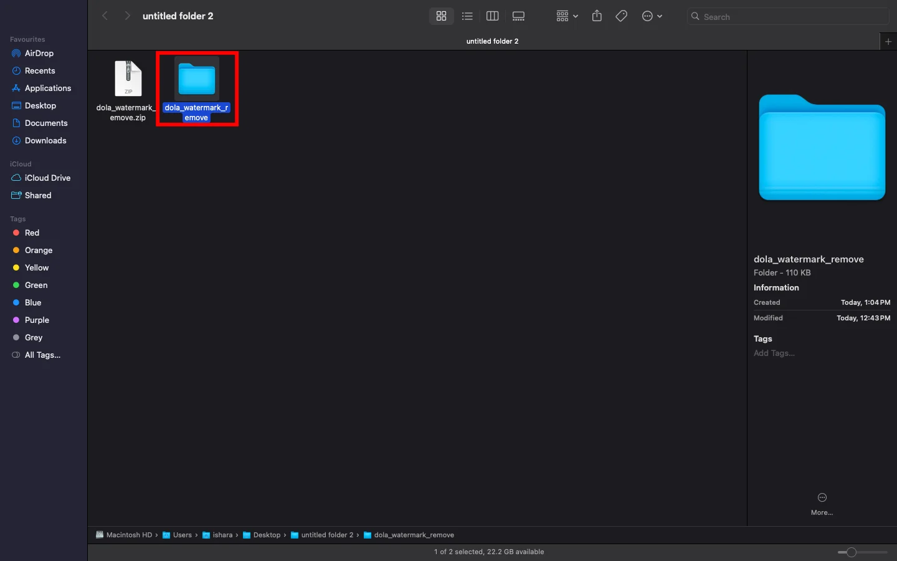
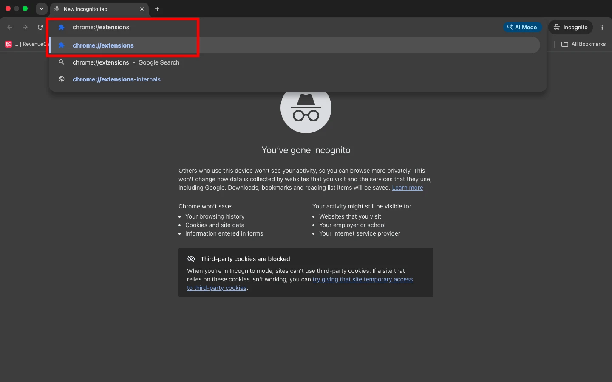
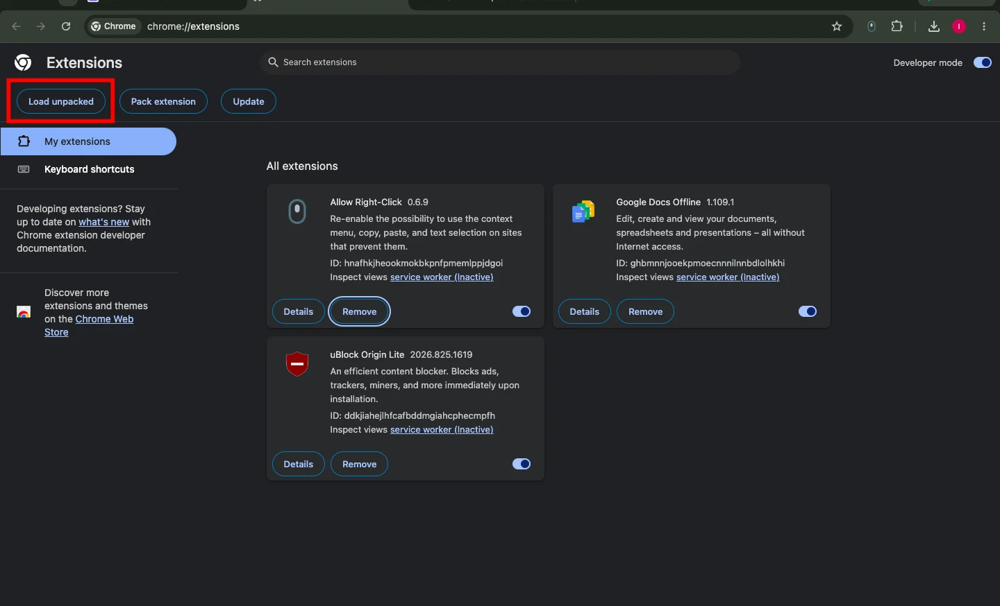
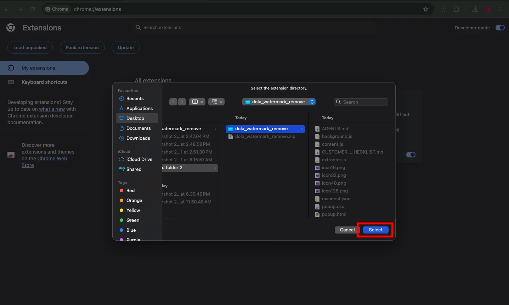
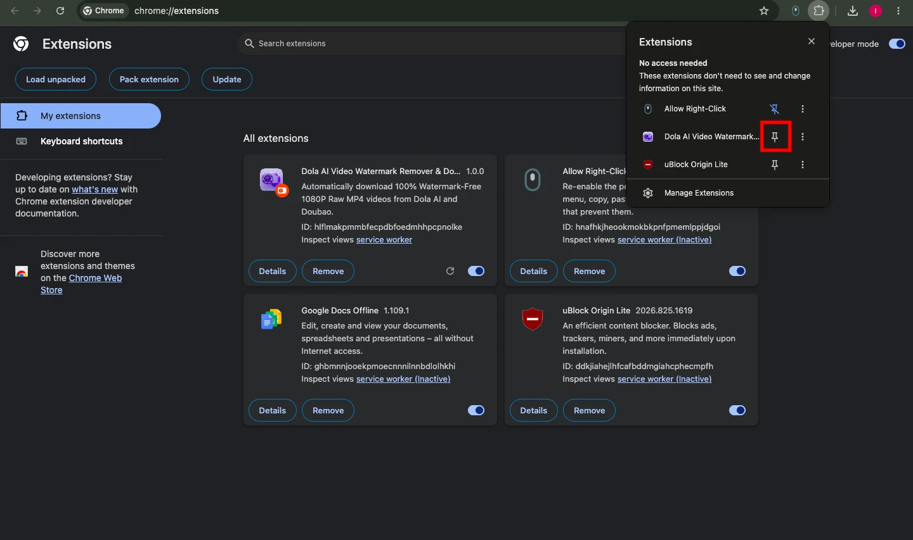

Download Dola Video Watermark Remover Extension
The ultimate Chrome extension to remove watermarks from Dola AI videos. Injects a seamless 1-click clean HD MP4 download button directly on video players with zero quality loss and full privacy.
How It Looks on Dola AI
Seamlessly integrates into dola.com with instant video detection, 1080p raw clean stream capture, and one-click downloads.

How to Install in 5 Simple Steps
No Chrome Web Store wait required. Install manually via Chromium Developer Mode in under 60 seconds.
Download & Extract ZIP
Click the download button to save dola-watermark-remover.zip on your computer. Extract the ZIP file to reveal the extension folder.

Open Chrome Extensions Page
Open a new tab in your Chromium browser (Chrome, Brave, or Edge), and navigate to chrome://extensions in the address bar.
chrome://extensions

Enable Developer Mode & Click Load Unpacked
In the top right corner of the extensions page, toggle on Developer mode. Then click the Load unpacked button located in the top-left toolbar.

Select the Extracted Extension Folder
In the file picker dialog, browse to your unzipped extension directory containing manifest.json and click Select.

Pin Extension & Enjoy Clean Dola Downloads
Click the Extensions puzzle icon in your browser toolbar and pin Dola Remover. Then visit dola.com to automatically remove watermarks and save 1080p clean MP4 videos!

Built for Speed, Quality & Total Privacy
Everything you need to capture crystal-clear Dola AI videos without intrusive watermarks.
1-Click Clean HD MP4 Download
Injects a prominent download button on every video container so you can save videos in full resolution immediately.
Auto-Remove Overlay Watermarks
Continuously monitors the DOM with MutationObserver to identify and suppress floating watermark logos in real-time.
Direct Clean Stream Extraction
Captures the raw video feed directly from source URLs with zero blurry re-compression and full original audio track preservation.
100% Client-Side & Private
Runs strictly inside your browser sandbox. No user tracking, no analytics, and zero external server calls.
Lightweight Manifest V3
Built adhering to modern Chrome extension standards for ultra-fast startup, zero browser lag, and minimal memory footprint.
Universal Chromium Support
Fully compatible across Google Chrome, Brave, Microsoft Edge, Opera, Arc, and Vivaldi on Windows, macOS, and Linux.
How the Extension Operates
Intelligent, non-destructive video stream detection in 3 simple phases.
Active DOM Scanning
As you browse Dola AI, the content script monitors video player instances and background SPA updates with an efficient observer.
Watermark Layer Suppression
Hides overlay badges and watermark containers cleanly without modifying or degrading the underlying video frames.
Direct Source Interception
Fetches the original high-bitrate MP4 stream and initiates an instant local download directly into your Downloads folder.
Frequently Asked Questions
Common questions regarding installation, safety, and using the Dola Video Watermark Remover Extension.
01
What is the Dola Video Watermark Remover Extension?
dola.ai). It automatically strips video watermark overlays and provides a 1-click button to download clean HD MP4 files directly from your browser.
02
Is this extension completely free and safe to install?
03
Why do I need to install it via Developer Mode?
04
Does it cause blurry smudges or lower video quality?
05
Which browsers are compatible?
06
How do I update the extension in the future?
dola-watermark-remover.zip, replace the files in your existing extension folder, and click the refresh icon on the extension card in chrome://extensions.
Get Dola Watermark Remover Today
Download the free extension and start saving clean, watermark-free Dola AI video downloads in seconds.